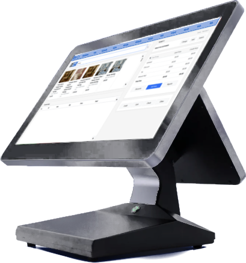
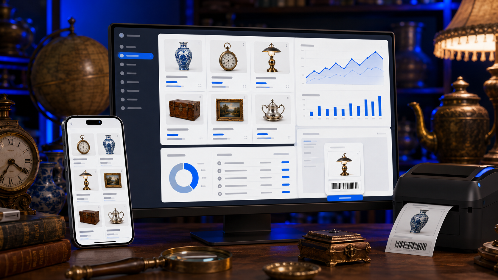

Disconnected tools
POS, spreadsheets, vendor texts and rent tracking live in separate places.
A premium, self-guided walkthrough of how AntiqueTrack™ can connect the register, vendors, inventory, booths, payments, reporting and growth.

Antique malls are not ordinary stores. Vendors, booths, leases, manual items, payouts, inventory, rent, notifications and real-time reporting all have to work together.
POS, spreadsheets, vendor texts and rent tracking live in separate places.
Owners and vendors are left waiting for reports instead of seeing what is happening now.
Payment costs, manual work and avoidable friction quietly erode margins.
More booths, more vendors and more locations make manual processes exponentially harder.
AntiqueTrack becomes the operating layer between every important part of the business.
Ring vendor inventory, scan items or add manual line items while preserving vendor and booth attribution. Cash, credit, gift cards, discounts and searchable receipt history remain in one workflow.


Organize inventory by vendor, booth, category and location. Pair clean inventory control with barcode workflows, item photos and smarter item identification so teams spend less time hunting for information.
Sales activity, notifications, inventory and reporting can move from “call the front desk” to a modern self-service experience.
Vendor and booth attribution is captured at checkout.
Instant text and email notifications when items sell.
Mobile-friendly reporting and sales visibility.
Move beyond one booth with VendorPro™.
Serious antique dealers, collectors and resellers can manage inventory, sell from mobile or desktop, print labels, operate across booths and locations, see live analytics and publish inventory to a built-in storefront.
For qualifying AntiqueTrack customers using integrated processing and approved terminals, dual pricing can reduce or potentially eliminate processing expense while keeping the POS, receipts, vendor payouts and statements connected.
Get a payment analysis →Ask what is selling, which vendors are moving, where inventory is stagnant and how today compares to last month.

“It did everything I wanted and more.”
Temperance Antique Emporium launched a 20,000-square-foot multi-vendor mall after more than a year searching for software that felt modern and could handle real opening-day complexity.
“It’s been such a relief to focus on running the store instead of wrestling with clunky software.”
A rollout designed around how your store actually operates.
Map vendors, booths, checkout flow and reporting needs.
Set up POS, inventory, vendor portals, payments and roles.
Train cashiers, support vendors and open with confidence.
Optimize pricing, reporting, inventory and sales channels.
Request a personalized walkthrough and we’ll map the right solution around your store size, vendors, booths, payments, reporting and launch plan.
Request My AntiqueTrack Demo →Call (850) 812-4711AntiqueTrack™ • Eagle Vision Demo Experience